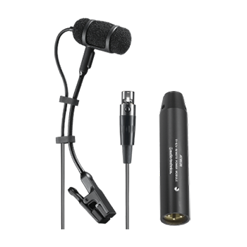
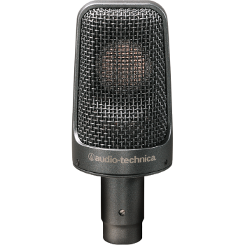
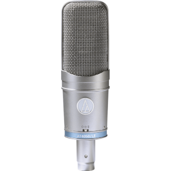
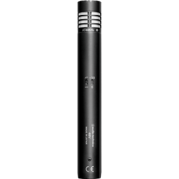
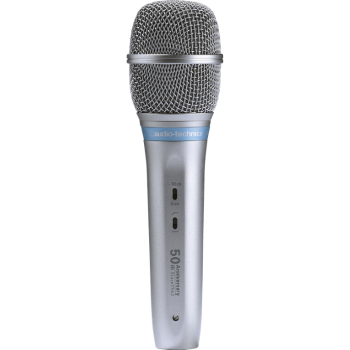

Condenser
ATM350
Cardioid condenser clip-on microphone
The ATM350a is available in multiple instrument-specific mounting systems and provides discreet, stable placement for woodwinds, strings, brass, percussion, drums, guitar, accordion, and piano.
Our Gear
Browse available Audio-Technica condenser microphone rental inventory from VD Audio Rental for live production, touring, theatre, and professional audio applications.

Explore available Audio-Technica condenser microphone options below and contact us for availability, production support, and quote requests.
Request a QuoteSelect a category to view available Audio-Technica options.
Condenser
Cardioid condenser clip-on microphone
The ATM350a is available in multiple instrument-specific mounting systems and provides discreet, stable placement for woodwinds, strings, brass, percussion, drums, guitar, accordion, and piano.

Condenser
Cardioid condenser clip-on instrument microphone
Designed for sax, toms, brass, and percussion, the PRO35 performs well in high-SPL stage applications and captures subtle performance detail with flexible positioning.

Condenser
Cardioid condenser instrument microphone
The Artist Elite AE3000 is a high-SPL large-diaphragm cardioid condenser instrument microphone suited for guitar cabinets, toms, snare, timpani, horns, and overhead applications.

Condenser
Multi-pattern condenser microphone
Ideal for studio use and live sound productions with vocals, piano, strings, drum overheads, guitar amps, and many other professional recording and reinforcement applications.

Condenser
Cardioid condenser microphone
Designed for professional recording, broadcast, and sound reinforcement, the AT4051b provides clean signal handling and reliable performance across a wide range of critical miking applications.

Condenser
Cardioid condenser handheld microphone
The AE5400 is a premium vocal microphone designed for performers who want condenser detail, strong stage performance, and low handling noise.